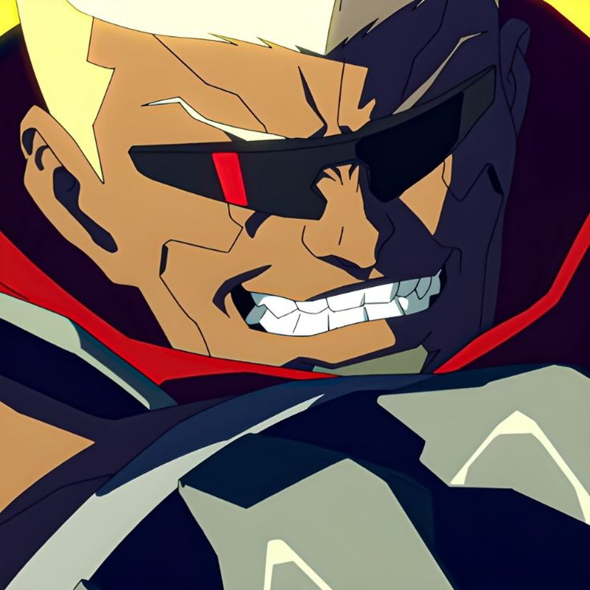
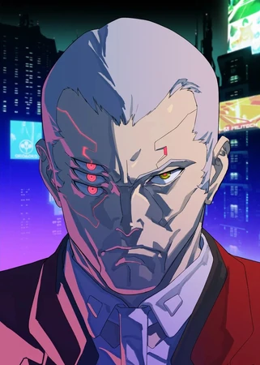

Els habitants més destacats de Night City, cadascun amb el seu passat, habilitats i una història marcada per la
tragèdia i la supervivència.

David Martinez
Doblador: KENN / Zach Aguilar
Un jove de barri que somia amb arribar al cim de Night City. Després de perdre la seva mare, es converteix
en un edgerunner i comença a implantar-se cibercomponents per sobreviure en un món que consumeix els seus
habitants. El seu destí està marcat per la seva ambició i el seu cor.

Lucy
Dobladora: Aoi Yuki / Emi Lo
Una netrunner misteriosa i independent que amaga un passat fosc relacionat amb experiments d’Arasaka.
Malgrat la seva fredor inicial, troba en David una raó per continuar lluitant. És experta en infiltrar-se en
xarxes i manipular sistemes.
Rebecca
Dobladora: Tomoyo Kurosawa / Alex Cazares
Una fanàtica de les armes de foc amb un temperament explosiu. Tot i la seva aparença caòtica, és lleial als
seus amics i especialment a David. Representa la bogeria i la tendresa que conviuen en el món ciberpunk.

Maine
Doblador: Hiroki Touchi / William C. Stephens
Líder del grup d’edgerunners i figura paternal per a David. Fort, carismàtic i experimentat, però consumit
pel seu propi cos augmentat. La seva història exemplifica el preu de la sobrecàrrega tecnològica.

Kiwi
Dobladora: Takako Honda / Stephanie Wong
Una netrunner professional i mentora de Lucy. Freda i calculadora, la seva traïció marca un dels moments
més tensos de la sèrie. Encara que aparentment desconnectada, també pateix per la seva pròpia humanitat
perduda.

Faraday
Doblador: Kazuhiko Inoue / Giancarlo Esposito
Un intermediari elegant i manipulador que treballa per a diverses corporacions, inclosa Arasaka. Faraday
controla
missions i equips d’edgerunners des de l’ombra, traint a qui calgui per obtenir benefici. Representa el
costat més
calculador i fred del món corporatiu de Night City.